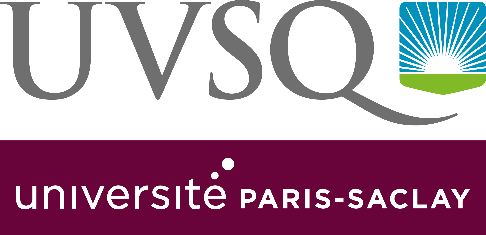
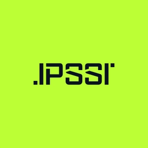
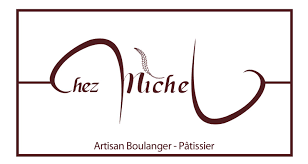
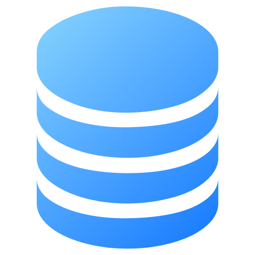

Qui suis-je ?
Je m'appelle William, j'ai 22 ans et je suis étudiant en 1ère année de BTS SIO option SLAM.
J'ai commencé à m'intéresser à l'informatique dès mon plus jeune âge, en jouant à des jeux vidéo et en explorant les bases de la programmation.
Depuis, ma passion pour l'informatique n'a cessé de grandir, et je suis déterminé à en faire ma carrière.
Découvrez mes passions de ce que je fais en ce moment en informatique.
Présentation du parcours scolaire
2022 - 2023 : 1ère année de licence portail Chimie Biologie à l'UVSQ (Université de ST Quentin en Yvelines) à Versailles

2023 - 2024 : 1ère année de licence portail Biologie Informatique toujours à l'UVSQ (Université de ST Quentin en Yvelines) à Versailles
2024 - 2026 : 1ère année de BTS SIO SLAM à l'IPSSI Grande école Informatique à Paris XIIème arrondissement

Présentation du BTS SIO
Le BTS SIO (Services Informatiques aux Organisations) est un diplôme français de niveau Bac+2 qui forme des professionnels capables de concevoir, développer et maintenir des solutions informatiques adaptées aux besoins des entreprises.
Il se divise en deux options :
- SLAM (Solutions Logicielles et Applications Métiers) : axée sur le développement d'applications, la programmation et la gestion de bases de données. 👈 (ce que je fais actuellement)
- SISR (Solutions d'Infrastructure, Systèmes et Réseaux) : axée sur l'administration des systèmes et réseaux, la sécurité informatique et la gestion des infrastructures.
Le BTS SIO prépare les étudiants à des métiers variés tels que développepeur web, administrateur systèmes et réseaux, analyste programmeur, chef de projet informatique, ou encore consultant en informatique.
Il est reconnu pour sa polyvalence et sa capacité à répondre aux besoins croissants des entreprises en matière de solutions informatiques.
Le BTS SIO est une formation très appréciée par les recruteurs, car elle permet aux étudiants d'acquérir des compétences techniques solides tout en développant leur capacité à travailler en équipe et à résoudre des problèmes concrets.
En tant qu'étudiant en BTS SIO option SLAM, je me spécialise dans le développement d'applications et la création de solutions logicielles adaptées aux besoins des entreprises.
Je suis passionné par la programmation et je m'efforce de rester à jour avec les dernières technologies et tendances du secteur.
Mon objectif est de devenir un développeur compétent et polyvalent, capable de concevoir des applications innovantes et de contribuer à la transformation numérique des organisations.
Mes Expériences professionnelles
Voici un aperçu de mes expériences professionnelles :


Mes Projets
Voici quelques projets sur lesquels j'ai travaillé (d'autres projets apparaîtront prochainement) :

Compétences
les langages que j'utilise actuellement pour les projets :




Veille technologique
J'ai présenté ma veille technologie sur les logiciels de triches
Cela a pour but de vous sensibilisez afin de vous montrez sur ces logiciels de triches
peuvent être dangereux pour votre ordinateur et vos données personnelles.
Voici la vidéo de présentation :
Sources utilisés :
- Cheat Engine
- WeMod
- ArtMoney
- Macro Recorder
- Aimware (Aimbot/Wallhack pour FPS)
- UnknownCheats (Forum de cheats FPS)
- EngineOwning (Cheats pour Warzone, Black Ops 6, etc.)
Ces logiciels sont principalement utilisés dans les jeux FPS (First Person Shooter) pour obtenir des avantages injustes comme l'aimbot, le wallhack ou l'autofire. Leur utilisation est interdite par la plupart des éditeurs de jeux et peut entraîner un bannissement.
Contactez-moi
Vous pouvez me joindre à l'adresse suivante :
📧 Chocolait94@hotmail.com
Mes réseaux